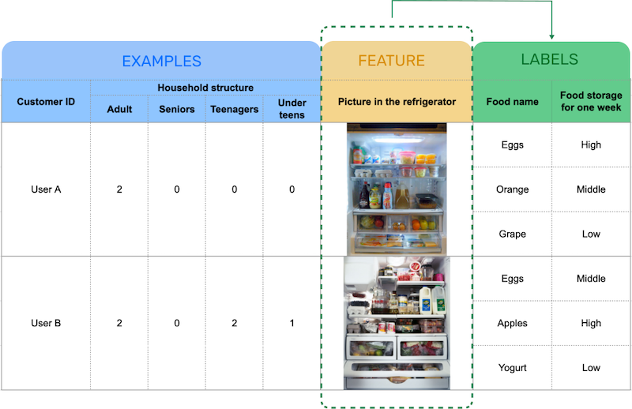

Choose food quantitiy dataset as one of the instances for explaing the system more in details. To calculate food consumption rate, the machine learning model needs 3 data. First one is purchase history, when, how many and how much the buys each food. The model can mathematically predict when the foods would be depleted.
For example, for user A, the model can predict he buys one pack of eggs every 7days on average, based on the purchase history from Amazon.

Data Source
- Purchase history from Amazon
- Quantitative survey of 10,000 households across the U.S.
- Qualititative research - observing different types of familes
The second data is food storage and consumption. From user input or a smart refrigerator, food quantity, food weight change on the fridge shelf and frequency of ordering foods and eating outside are collected. Based on them, rators judge whether the food strage would last for one week that is very difficult for the model to assess.

Data Source
- User input
- Partnering with Samsung to detect when items in the refrigerator have been depleted
- Weight data from the refrigerator or food containers to see how fast foods are eaten
The model utilizes images in a fridge that come from smart fridges or pictures that our user takes, because image recognition is one of what AI is good at. Even though here is a problem that ituations in the fridge are very different in each household. As you can see in the 2 images on the slide, some people prefer to preserve foods in a container while others do not. The raters teach which foods are stored and how enough they are, considering your household structures.

Data Source
- User input
- Partnering with Samsung to detect when items in the refrigerator have been depleted